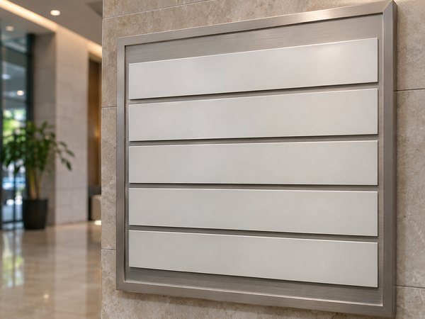
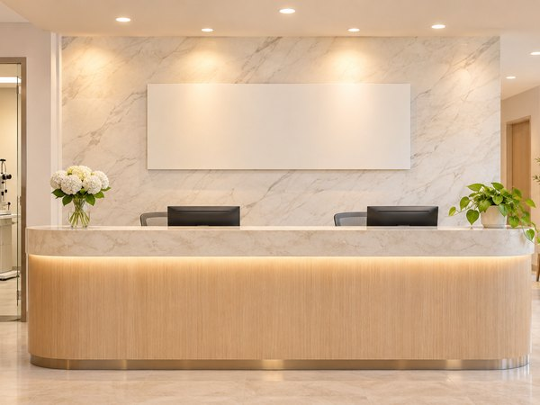
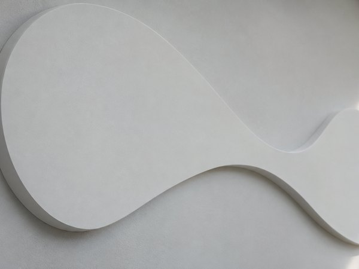
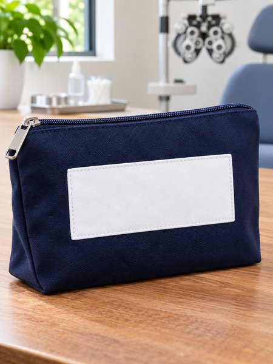

드디어 스마일라식 하다!
- 봄**
- 수술일 2025.12.13
리뷰 내용
- 교정전
- 교정후
드디어 안경을 벗기로 했어요!
- 중략 -
대학 동기가 주말에 수술한 뒤 월요일 강의에 왔던 일을 기억하고 있었어요.
수술 뒤에도 평소처럼 지내는 모습을 보고 놀랐어요. 아프지 않았다는 말을 듣고도 선뜻 믿기 어려웠지만 그때부터 기억에 남았습니다.
스마일 방식으로

당시에는 비용이 제게 꽤 부담스러웠어요.
취업한 지금이라 비용을 마련할 수 있었어요. 학생 때였다면 현재 금액도 부담이 컸을 것 같습니다.
그때는 라식 수술을 미룰 이유를 하나 더 찾으며 망설였어요.
한동안 망설였지만
몇 주 전 용기 내어 상담을 받고 수술했어요.
- 중략 -

그래서 간 병원은 서울시원안과
처음엔 안과는 어디나 비슷하겠지 생각했는데,
직접 가서 검사를 받고 설명을 들으니 절차가 체계적이라 믿음이 갔어요.

막연히 떠올리던 병원 분위기와 달랐어요. 공간이 차분하게 정리되어 있어 기다리는 동안 마음이 놓였습니다.
알아본 곳 중 분위기가 차분해서 여기로 마음을 정했어요.
받기 전에는 긴장이 컸어요. 담당자가 서두르지 않고 차례를 알려 주니 부담이 한결 줄었습니다.
수술 자체는 예상보다 빠르게 지나갔고
후기를 읽으며 걱정했던 아픔이나 불편을 저는 크게 느끼지 않아 다행이라고 생각했어요.
수술 당일 눈이 조금 시렸지만 견딜 만했어요.
다음 날부터 통증은 거의 없었고 안경 없이 지낼 수 있었어요.
며칠 지나면서 점점 잘 보였고 안경을 챙기지 않아도 돼서 정말 편했어요.
주변에서 병원을 물어본다면 제 경험을 바탕으로 이곳을 알려 주고 싶어요.

수술 뒤 점안약을 챙길 파우치도
안과 고르느라 고민하는 사람이면 참고해 볼 만한 경험이었다고 생각한다.
돌아봐도 잘 결정한 일 같아요.
따뜻한 실내에 들어갈 때 안경이 뿌옇게 되지 않는 게 제일 좋아요.
라면을 먹을 때 안경에 김이 서리지 않는 점도 편해요.
생활이 한결 가벼워졌어요.
주변에서 잘했다고 말해 줘서 결과를 돌아보며 뿌듯했어요.
출처 : 환자 블로그 후기
- 교정전
- 교정후